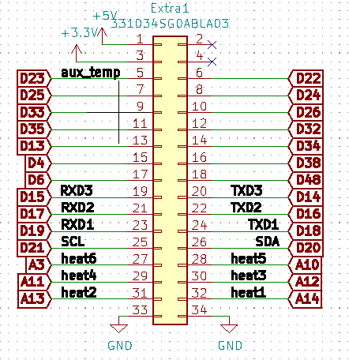

V0.9
The original working prototype for CP800
The function of the board is broken down into the following sections:
1) The power transfer to each of the components below
2) The pumps
3) The motor
4) The fluid sensors feedback
5) The solenoid valves for flow control
6) The user interface
7) The heating element
Power circuit
Both 12V and 5V comes from the external switch converter and are reverse polarity protected with low on resistance p-channel MOSFET and Zener diode.
The Arduino is powered via the 5V pin bypassing the LDO that required a higher voltage to power. And all 12V and 5V components will be supplied by these two voltage sources.
There are four power connectors, one is the input from the 12V PSU, one is the 12V output after the reverse polarity protection, one is 5V voltage input from the buck converter, and the last one is an extra header for a 5V reference.
Pumps control
There are three output ports for pumps. They are 2pin output.
Each pump is driven by a power MOSFET to switch them on and off with a low side BJT transistor as the gate driver.
A high output in the microcontroller will allow gate to discharge thru the BJT quickly, and achieve a faster turn off of the pumps. Meanwhile, a low output on the microcontroller will turn the BJT off, and the MOSFET gate is charged thru the low resistance pull up resistor, to achieve a regulated turn on time.
The pull up resistor in the microcontroller signal pin is implemented in the case where these pins are not programmed. The pull up resistors will ensure the pump is off when these pins are not programmed.
Fuses are installed to prevent over current, and a flyback Schottky diode is used to limit voltage surge by the induction load from the pumps.
Motor Control
The motor control is very similar to the pump control as they are both inductions loading presumably.
The motor we are using has 5 pins control: PWR, DIR, PWN, FB, GND. We don't use the current feedback wire, so it is left out of the port output intentionally.
The motor is then connected to the 4 pins JST XH output on the board.
In order to turn on the motor, we need the PWE pin to be 12V, and the GND pin to be 0V. There is a fuse of the appropriate current to limit over current, and there is a flyback Schottky diode to limit voltage surge.
Both DIR and GND pins are controlled by power MOSFETs to switch between 12V and 0V. A pulled up resistor of 12V is in place for the DIR pin, so there is a default DIR of rotation for the motor, if the pin is left hanging.
The low side BJT allows a quick discharge of gate, and the low resistance pull up allows a fixed time fast charging up to the gate.
The pulled up in the microcontroller pins are to make sure the DIR and 0V pin are forced to 12V and keep the motor off, if these pins are not programmed by the microcontroller.
Solenoid valves control
Both add and remove valves are controlled in the same way. Since solenoid is a highly inductive load, we have to apply a voltage of 12V across each pair of contact on the solenoid block. Similar to motor and pumps, a fuse to protect from over current and flyback Schottky diode for voltage surge.
Each solenoid is switched on and off by a MOSFET with a low side BJT driver for fast drain in gate and a pulled-up resistor in case of unprogrammed microcontroller pins to the demultiplexer, CD4051.
User interface

There are two connectors between the motherboard and the Dpad board. These control the user interface. The 10ways IDC connector is the connection with each button and LED on the Dpad. The 10ways JST XH header is the signal going to the LCD screen.
The screen is turned on and off by MOSFET, the program is currently locked to stay on. Future programming is required to control the backlight.

The signal from the Dpad will be processed by a DAC with a R-2R structure, to convert the 6 inputs from the Dpad to a binary coded 8bit voltage. Note that only UIcontrol analog signal is used, the second output is left connected. Now.
Heating element

The heating element chosen is one that is powered by AC 240V input, at the connector, HE1.
KBP206G is the rectifier to convert AD into DC voltage.
The 4N35SM photocoupler will convert the rectified wave and generate an on and off 5V signal to the microcontroller to locate the zero-crossing point of the input wave. This will allow the microcontroller to align the output from this zero-crossing moment if necessary.
MOC3020 is the photocoupler, between DC to AC using a triac. This component allows the microcontroller to sink the current at the cathode (the negative, pin 2) of the MOC3020 diode. Allowing the microcontroller to control the pulse powering the heating element by driving the BT1365 triac.
R6, R9 and C2, are there to protect the MOC3020 from load, and R10 and C3 form the snubber to protect the triac.

Additional cutout on PCB to increase the effective isolation between the 240V on each contact of the rectifier.
The AC circuit is located at a different part of the PCB, and the pinout for controlling the heating element is done by a 4ways connector as shown above. A jumper cable will be required to connect this connector, MUC_HEAT_OUT1, with the one input 4ways connector, MCU_heating_IN1, connection the MOC3020 and 4N35 IC.
Sensors
There are three main sensors: temperature, tank high level, and flow out sensor
Temperature sensor is currently unuse, it is supposed to serve as the feedback to control the heating element. It is using a one-wire bus to transmit its digital data. The sensor used here is DS18B20.
The tank high level sensor is a 4 pins socket connecting to a capacitance sensor mounted to the tank and will trigger a on signal when the water level is raised.
The flow out sensor is a 4 pins socket connecting to two capacitance sensors clipped to the outlet tubbing from the tank to the solenoid valve, and will trigger a signal when they sense the tube has fluid inside.
Buzzer
A buzzer is integrated to the board, this allows the program to give out audio clues to the user/operator when things happen. See software documentation to see the list of audio clues.
Communication Ports

There are two types of communication port accessible from the boards via three ports:
There are two I2C ports, 4 ways, with one of the port has an extra set of pulled up resistor for a new additional device
There is a 16way IDC SPI communication port. This is currently used for the SD card module. The hardware is suitable for any SPI device. The parallel pin socket allow another device to be piggy-back to the same port.
Microcontroller pinout
A pinout diagram of the microcontroller to all the other components on the board. Some basic components such as transistor and resistor are added depending on the signal the pin is interfacing with. This would change depending on the programs being uploaded to the microcontroller.

All the extra pins are tentatively grouped to an IDC header for future development and expansion.